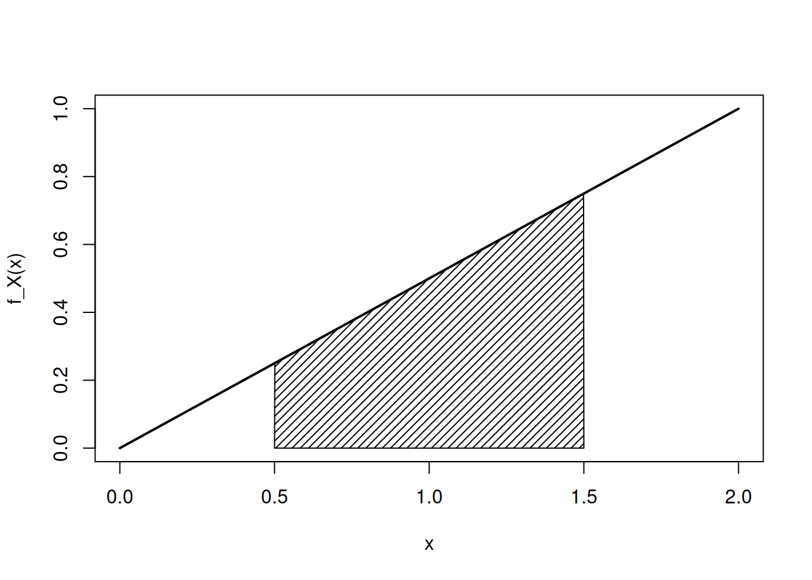
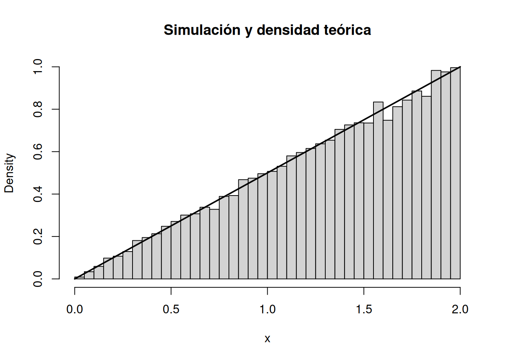

f <- function(x) x / 2
integrate(f, lower = 0, upper = 2)1 with absolute error < 1.1e-14integrate(f, lower = 0.5, upper = 1.5)0.5 with absolute error < 5.6e-15Al finalizar este capítulo, el estudiante será capaz de:
Las variables discretas aparecen cuando contamos. Las variables continuas aparecen con frecuencia cuando medimos.
Ejemplos típicos son:
Aunque un instrumento digital muestre un número finito de decimales, el modelo matemático suele considerar que la variable puede tomar cualquier valor dentro de un intervalo.
En un modelo elemental, decimos que una variable aleatoria \(X\) es continua cuando existe una función no negativa \(f_X(x)\) tal que las probabilidades pueden obtenerse mediante áreas:
\[ P(a<X<b)=\int_a^b f_X(x)\,dx. \]
La función \(f_X\) se denomina función de densidad de probabilidad, o PDF por sus siglas en inglés.
Una función \(f_X\) es una densidad de probabilidad si satisface:
\[ f_X(x)\geq 0 \]
para todo \(x\), y
\[ \boxed{\int_{-\infty}^{\infty} f_X(x)\,dx=1}. \]
La segunda condición expresa que el área total bajo la curva es 1.
Ésta es una diferencia fundamental respecto de una PMF discreta.
Para una variable continua,
\[ \boxed{P(X=x)=0}. \]
Por tanto,
\[ f_X(x)\neq P(X=x). \]
La densidad describe concentración de probabilidad alrededor de un valor, mientras que la probabilidad se obtiene integrando sobre un intervalo.
Una densidad incluso puede tomar valores mayores que 1 sin violar las reglas de probabilidad, siempre que el área total sea 1.
Si \(a<b\), entonces
\[ \boxed{P(a<X<b)=\int_a^b f_X(x)\,dx}. \]
Como un punto aislado tiene probabilidad cero, para variables continuas no importa incluir o excluir los extremos:
\[ P(a<X<b)=P(a\leq X<b)=P(a<X\leq b)=P(a\leq X\leq b). \]
Esta igualdad no es cierta, en general, para variables discretas.
Supongamos que
\[ f_X(x)= \begin{cases} \frac{1}{10}, & 0\leq x\leq10,\\ 0, & \text{en otro caso}. \end{cases} \]
El área total es
\[ \int_0^{10}\frac{1}{10}\,dx=1. \]
La probabilidad de observar un valor entre 2 y 6 es
\[ P(2\leq X\leq6) =\int_2^6\frac{1}{10}\,dx =\frac{4}{10}=0.4. \]
Sea
\[ f_X(x)= \begin{cases} cx, & 0\leq x\leq2,\\ 0, & \text{en otro caso}. \end{cases} \]
Para que sea una densidad,
\[ \int_0^2 cx\,dx=1. \]
Entonces
\[ c\left[\frac{x^2}{2}\right]_0^2=1, \]
\[ 2c=1, \]
por lo que
\[ \boxed{c=\frac12}. \]
La densidad es
\[ f_X(x)=\frac{x}{2},\qquad 0\leq x\leq2. \]
Por ejemplo,
\[ P(0.5<X<1.5) =\int_{0.5}^{1.5}\frac{x}{2}\,dx =0.5. \]
Para cualquier variable aleatoria,
\[ F_X(x)=P(X\leq x). \]
Si \(X\) tiene densidad \(f_X\), entonces
\[ \boxed{F_X(x)=\int_{-\infty}^{x}f_X(t)\,dt}. \]
La CDF acumula el área situada a la izquierda de \(x\).
Cuando \(F_X\) es diferenciable,
\[ \boxed{f_X(x)=F_X'(x)}. \]
Así, densidad y distribución acumulada son dos formas relacionadas de describir el mismo modelo continuo.
Para
\[ f_X(x)=\frac{x}{2},\qquad 0\leq x\leq2, \]
obtenemos
\[ F_X(x)= \begin{cases} 0, & x<0,\\ \frac{x^2}{4}, & 0\leq x\leq2,\\ 1, & x>2. \end{cases} \]
Podemos verificar que
\[ F_X(2)=1. \]
Además,
\[ P(0.5<X<1.5)=F_X(1.5)-F_X(0.5). \]
Para \(a<b\),
\[ P(a<X\leq b)=F_X(b)-F_X(a). \]
En el caso continuo, como \(P(X=a)=0\),
\[ P(a<X<b)=F_X(b)-F_X(a). \]
También
\[ P(X>x)=1-F_X(x). \]
Estas relaciones serán muy útiles cuando trabajemos con distribuciones continuas conocidas.
Sea \(X\) el error, en milímetros, de un instrumento de inspección. Supongamos que el modelo asigna una densidad triangular sobre el intervalo \([-1,1]\):
\[ f_X(x)= \begin{cases} 1-|x|, & -1\leq x\leq1,\\ 0, & \text{en otro caso}. \end{cases} \]
El área total es 1. La probabilidad de que el error absoluto sea menor que 0.25 mm es
\[ P(|X|<0.25)=\int_{-0.25}^{0.25}(1-|x|)\,dx. \]
Por simetría,
\[ P(|X|<0.25)=2\int_0^{0.25}(1-x)\,dx=0.4375. \]
Este tipo de cálculo relaciona directamente una tolerancia de ingeniería con un área de probabilidad.
Supongamos que \(X\) representa una concentración normalizada y que su densidad en \(0\leq x\leq1\) es
\[ f_X(x)=2(1-x). \]
La probabilidad de observar una concentración superior a 0.7 es
\[ P(X>0.7)=\int_{0.7}^{1}2(1-x)\,dx=0.09. \]
La interpretación es que, bajo este modelo, aproximadamente 9% de las observaciones exceden 0.7.
R puede calcular probabilidades mediante integrate().
f <- function(x) x / 2
integrate(f, lower = 0, upper = 2)1 with absolute error < 1.1e-14integrate(f, lower = 0.5, upper = 1.5)0.5 with absolute error < 5.6e-15El primer resultado debe ser 1 y el segundo corresponde a la probabilidad del intervalo.
f <- function(x) ifelse(x >= 0 & x <= 2, x / 2, 0)
grid <- seq(0, 2, length.out = 500)
y <- f(grid)
plot(grid, y, type = "l", lwd = 2,
xlab = "x", ylab = "f_X(x)")
a <- 0.5
b <- 1.5
sel <- grid >= a & grid <= b
polygon(c(a, grid[sel], b),
c(0, y[sel], 0),
density = 20)
La región sombreada representa exactamente una probabilidad.
Podemos definir la CDF directamente mediante integración:
F <- function(x) {
if (x <= 0) return(0)
if (x >= 2) return(1)
integrate(f, lower = 0, upper = x)$value
}
sapply(c(-1, 0, 0.5, 1, 1.5, 2, 3), F)[1] 0.0000 0.0000 0.0625 0.2500 0.5625 1.0000 1.0000Para la densidad
\[ f_X(x)=\frac{x}{2},\qquad0\leq x\leq2, \]
la CDF es
\[ F_X(x)=\frac{x^2}{4}. \]
Si \(U\) es uniforme en \((0,1)\), podemos resolver
\[ U=\frac{X^2}{4} \]
para obtener
\[ X=2\sqrt U. \]
Esto permite simular valores:
set.seed(2026)
n <- 20000
u <- runif(n)
xsim <- 2 * sqrt(u)
mean(xsim >= 0.5 & xsim <= 1.5)[1] 0.50265La frecuencia relativa debe aproximarse a la probabilidad teórica 0.5.
hist(xsim, probability = TRUE,
breaks = 30,
xlab = "x",
main = "Simulación y densidad teórica")
curve(x / 2, from = 0, to = 2,
add = TRUE, lwd = 2)
El histograma representa la distribución empírica; la curva representa el modelo teórico.
La edición web incluye una densidad triangular normalizada sobre \([0,1]\). El estudiante puede modificar:
El recurso sombrea automáticamente el área
\[ P(a<X<b) \]
y muestra simultáneamente el valor de la probabilidad. También permite observar que mover los límites cambia el área, no la “altura puntual” como probabilidad.
Construye una densidad triangular sobre \([0,1]\) con modo \(m\), donde \(0<m<1\):
\[ f(x)= \begin{cases} \frac{2x}{m}, & 0\leq x\leq m,\\ \frac{2(1-x)}{1-m}, & m<x\leq1,\\ 0, & \text{en otro caso}. \end{cases} \]
Crea deslizadores para \(m\), \(a\) y \(b\) y utiliza el comando de integral para sombrear
\[ \int_a^b f(x)\,dx. \]
Comprueba que el área total bajo la densidad es siempre 1 aunque cambie el modo \(m\).
Conviene mantener esta distinción:
| Concepto | Discreto | Continuo |
|---|---|---|
| Probabilidad puntual | \(P(X=x)=p_X(x)\) | \(P(X=x)=0\) |
| Probabilidad de intervalo | suma de masas | integral de densidad |
| Función básica | PMF | |
| CDF | suma acumulada | integral acumulada |
Una variable continua puede describirse mediante una densidad \(f_X\) tal que
\[ f_X(x)\geq0, \]
\[ \int_{-\infty}^{\infty}f_X(x)\,dx=1, \]
y
\[ P(a<X<b)=\int_a^b f_X(x)\,dx. \]
Su CDF es
\[ F_X(x)=\int_{-\infty}^{x}f_X(t)\,dt, \]
y, donde exista la derivada,
\[ f_X(x)=F_X'(x). \]
Para una variable absolutamente continua,
\[ P(X=x)=0. \]
| Material | Formato | Acceso | Propósito |
|---|---|---|---|
| Cuaderno de Google Colab | Notebook interactivo (R) | Abrir en Colab | Ejecutar, modificar y experimentar con los ejemplos computacionales del capítulo. |
| Cuaderno de R | R Markdown | Abrir cuaderno R | Reproducir y ampliar los ejemplos en R/RStudio. |
| Interactivo | HTML / GeoGebra | Abrir recurso | Explorar visualmente los conceptos centrales del capítulo. |
| Presentación | PDF / PPT | Próximamente | Se incorporará cuando se proporcionen los enlaces. |
| Video | Video | Próximamente | Explicación audiovisual complementaria. |
| Infografía | Imagen / PDF | Próximamente | Síntesis visual de conceptos y fórmulas clave. |
Los cuadernos de R acompañan este capítulo para reproducir, modificar y extender los ejemplos. El cuaderno de Google Colab permite trabajar desde el navegador. Las presentaciones, videos e infografías se enlazarán en esta misma tabla cuando estén disponibles.
El tratamiento de variables continuas, densidades y funciones de distribución acumulada sigue el desarrollo estándar de Walpole et al. (2012), Devore (2016), Montgomery y Runger (2018) y Johnson (2018). Los ejemplos, actividades, código R y simulaciones de este capítulo son originales; el enfoque computacional general toma como referencia Kerns (2010).